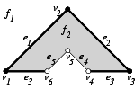
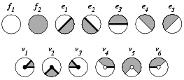

|
CGAL 4.13 - 3D Boolean Operations on Nef Polyhedra
|
|
CGAL 4.13 - 3D Boolean Operations on Nef Polyhedra
|
In solid modeling, two major representation schemes are used: constructive solid geometry (CSG) and boundary representations (B-rep). Both have inherent strengths and weaknesses, see [3] for a discussion.
In CSG a solid is represented as a set-theoretic Boolean combination of primitive solid objects, such as blocks, prisms, cylinders, or toruses. The Boolean operations are not evaluated, instead, objects are represented implicitly with a tree structure; leaves represent primitive objects and interior nodes represent Boolean operations or rigid motions, e.g., translation and rotation. Algorithms on such a CSG-tree first evaluate properties on the primitive objects and propagate the results using the tree structure.
A B-rep describes the incidence structure and the geometric properties of all lower-dimensional features of the boundary of a solid. Surfaces are oriented to decide between the interior and exterior of a solid.
The class of representable objects in a CSG is usually limited by the choice of the primitive solids. A B-rep is usually limited by the choice for the geometry of the supporting curves for edges and the supporting surfaces for surface patches, and, in addition, the connectivity structure that is allowed. In particular, a B-rep is not always closed under Boolean set operations. As an example, the class of orientable 2-manifold objects is a popular and well understood class of surfaces commonly used for B-reps. They can be represented and manipulated efficiently, the data structures are compact in storage size, and many algorithms are simple. On the other side, this object class is not closed under Boolean set operations, as many examples can illustrate, such as the Figure shown above that can be generated using Boolean set operations on cubes. The vertices bounding the tunnel, or the edge connecting the "roof" with the cube are non-manifold situations.
In our implementation of Nef polyhedra in 3D, we offer a B-rep data structure that is closed under Boolean operations and with all their generality. Starting from halfspaces (and also directly from oriented 2-manifolds), we can work with set union, set intersection, set difference, set complement, interior, exterior, boundary, closure, and regularization operations (see Section Regularized Set Operations for an explaination of regularized set operations). In essence, we can evaluate a CSG-tree with halfspaces as primitives and convert it into a B-rep representation.
In fact, we work with two data structures; one that represents the local neighborhoods of vertices, which is in itself already a complete description, and a data structure that connects these neighborhoods up to a global data structure with edges, facets, and volumes. We offer a rich interface to investigate these data structures, their different elements and their connectivity. We provide affine (rigid) transformations and a point location query operation. We have a custom file format for storing and reading Nef polyhedra from files.
The theory of Nef polyhedra has been developed for arbitrary dimensions. The class Nef_polyhedron_3 implements a boundary representation for the 3-dimensional case.
Definition: A Nef-poly-he-dron in dimension \( d\) is a point set \( P \subseteq \mathbb{R}^d\) generated from a finite number of open halfspaces by set complement and set intersection operations.
Set union, difference and symmetric difference can be reduced to intersection and complement. Set complement changes between open and closed halfspaces, thus the topological operations boundary, interior, exterior, closure and regularization are also in the modeling space of Nef polyhedra.
A face of a Nef polyhedron is defined as an equivalence class of local pyramids that are a characterization of the local space around a point.
Definition: A point set \( K \subseteq \mathbb{R}^d\) is called a cone with apex \( 0\), if \( K = \mathbb{R}^{+} K\) (i.e., \( \forall p \in K, \forall \lambda > 0: \lambda p \in K\)) and it is called a cone with apex \( x\), \( x \in \mathbb{R}^d\), if \( K = x + \mathbb{R}^{+} (K - x)\). A cone \( K\) is called a pyramid if \( K\) is a polyhedron.
Now let \( P \in \mathbb{R}^d\) be a polyhedron and \( x \in \mathbb{R}^d\). There is a neighborhood \( U_0(x)\) of \( x\) such that the pyramid \( Q := x + \mathbb{R}^{+} ((P \cap U(x)) - x)\) is the same for all neighborhoods \( U(x) \subseteq U_0(x)\). \( Q\) is called the local pyramid of \( P\) in \( x\) and denoted \( \pyr_P(x)\).
Definition: Let \( P \in \mathbb{R}^d\) be a polyhedron and \( x, y \in \mathbb{R}^d\) be two points. We define an equivalence relation \( x \sim y\) iff \( \pyr_P(x) = \pyr_P(y)\). The equivalence classes of \( \sim\) are the faces of \( P\). The dimension of a face \( s\) is the dimension of its affine hull, \( \dim s := \dim \aff s\).
In other words, a face \( s\) of \( P\) is a maximal non-empty subset of \( \mathbb{R}^d\) such that all of its points have the same local pyramid \( Q\) denoted \( \pyr_P(s)\). This definition of a face partitions \( \mathbb{R}^d\) into faces of different dimension. A face \( s\) is either a subset of \( P\), or disjoint from \( P\). We use this later in our data structure and store a selection mark in each face indicating its set membership.
Faces do not have to be connected. There are only two full-dimensional faces possible, one whose local pyramid is the space \( \mathbb{R}^d\) itself and the other with the empty set as a local pyramid. All lower-dimensional faces form the boundary of the polyhedron. As usual, we call zero-dimensional faces vertices and one-dimensional faces edges. In the case of polyhedra in space we call two-dimensional faces facets and the full-dimensional faces volumes. Faces are relative open sets, e.g., an edge does not contain its end-vertices.
We illustrate the definitions with an example in the plane. Given the closed halfspaces
\[ \begin{array}{lllll} h_1: y \ge 0,\ \ \ & h_2: x - y \ge 0,\ \ \ & h_3: x + y \le 3,\ \ \ & h_4: x - y \ge 1,\ \ \ & h_5: x + y \le 2, \end{array} \]
we define our polyhedron \( P := ( h_1 \cap h_2 \cap h_3) - ( h_4 \cap h_5)\).

|

|
The left figure illustrates the polyhedron with its partially closed and partially open boundary, i.e., vertex \( v_4, v_5, v_6\), and edges \( e_4\) and \( e_5\) are not part of \( P\). The local pyramids for the faces are \( \pyr_P(f_1) = \emptyset\) and \( \pyr_P(f_2) = \mathbb{R}^2\). Examples for the local pyramids of edges are the closed halfspace \( h_2\) for the edge \( e_1\), \( \pyr_P(e_1) = h_2\), and the open halfspace that is the complement of \( h_4\) for the edge \( e_5\), \( \pyr_P(e_5) = \{(x,y) | x - y < 1\}\). The edge \( e_3\) consists actually of two disconnected parts, both with the same local pyramid \( \pyr_P(e_3) = h_1\). In our data structure, we will represent the two connected components of the edge \( e_3\) separately. The figure on the right lists all local pyramids for this example.
The local pyramids of each vertex are represented by conceptually intersecting the local neighborhood with a small \( \varepsilon\)-sphere. This intersection forms a planar map on the sphere (see next two figures), which together with the set-selection mark for each item (i.e. vertices, edges, loops and faces) forms a two-dimensional Nef polyhedron embedded in the sphere. We add the set-selection mark for the vertex and call the resulting structure the sphere map of the vertex. We use the prefix \( s\) to distinguish the elements of the sphere map from the three-dimensional elements. See Chapter Chapter_2D_Boolean_Operations_on_Nef_Polygons_Embedded_on_the_Sphere for further details.
Having sphere maps for all vertices of our polyhedron is a sufficient but not easily accessible representation of the polyhedron. We enrich the data structure with more explicit representations of all the faces and incidences between them.
We depart slightly from the definition of faces in a Nef polyhedron; we represent the connected components of a face individually and do not implement additional bookkeeping to recover the original faces (e.g., all edges on a common supporting line with the same local pyramid) as this is not needed in our algorithms. We discuss features in the increasing order of dimension.
For each face we store a label, e.g., a set-selection mark, which indicates whether the face is part of the solid or if it is excluded. We call the resulting data structure Selective Nef Complex, SNC for short [2]. However, in CGAL we identify the names and call the SNC data structure Nef_polyhedron_3.
We call a Nef polyhedron bounded if its boundary is bounded, i.e., finite, and unbounded otherwise. Note that unbounded point sets can have a bounded boundary, for example, the complement of a cube has an unbounded outer volume, but its boundary remains bounded.
Using a boundary representation, it is convenient (conceptually and in our implementation) to consider bounded Nef polyhedra only. Bounded Nef polyhedra are also closed under Boolean set operations. However, one needs to start with bounded primitives; the conceptually nice halfspaces cannot be used. Instead, we offer a construction from oriented 2-manifolds represented in a Polyhedron_3, see Section subsectionNef_3Polyhedron below.
In order to handle unbounded Nef polyhedra conceptually in the same way as we handle bounded Nef polyhedra, we intersect them with a bounding cubical volume of size \( [-R,R]^3\), where \( R\) is a symbolical unspecified value, which is finite but larger than all coordinate values that may occur in the bounded part of the polyhedron. As a result, each Nef polyhedron becomes bounded. We call the boundary of the bounding volume the infimaximal box [5].
We clip lines and rays at the infimaximal box. The intersection points with the infimaximal box are called non-standard points, which are points whose coordinates are \( -R\) or \( R\) in at least one dimension, and linear functions \( f(R)\) for the other dimensions. Such extended points (and developed from there also extended segments etc) are provided in CGAL with extended kernels - Extended_cartesian and Extended_homogeneous. They are regular CGAL kernels with a polynomial type as coordinate number type.
As long as an extended kernel is used, the full functionality provided by the Nef_polyhedron_3 class is available. If a kernel that does not use polynomials to represent coordinates is used, it is not possible to create or load unbounded Nef polyhedra, but all other operations work as expected. We provided both possibilities, since the restriction to bounded Nef polyhedra improves considerably space requirements (plain number type instead of polynomial), and runtime performance.
Since manifolds are not closed under Boolean operations, Requicha proposes to use regularized set operations [4], cgal:r-rrstm-80. A set is regular, if it equals the closure of its interior. A regularized set operation is defined as the standard set operation followed by a regularization of the result. Regularized sets are closed under regularized set operations.
Regularized set operations are important since they simplify the class of solids to exclude lower dimensional features and the boundary belongs to the point set. These properties are considered to reflect the nature of physical solids more closely.
Regularized polyhedral sets are a subclass of Nef polyhedra. We provide the regularization operation as a shortcut for the consecutive execution of the interior and the closure operations.
The following example gives a first impression of how to instantiate and use Nef_polyhedron_3. We use the Cartesian kernel. All Cartesian and homogeneous kernels of CGAL are suitable if the number type parameter follows the usual requirements of being a model of the FieldNumberType concept for the Cartesian kernels, or the RingNumberType concept for the homogeneous kernels, respectively. Note however, that in the current state, the Nef polyhedron works only with CGAL kernels. The implementation makes use of CGAL specific functions in kernel objects, and does not yet offer a designed interface to a clean kernel concept that could be offered by an external kernel as well.
The example creates two Nef polyhedra - N0 is the empty set, while N1 represents the full space, i.e., the set of all points in the 3-dimensional space. The assertion assures that the empty set is the complement of the full space.
This example shows the various constructors. We can create the empty set, which is also the default constructor, and the full space, i.e. all points of \( \mathbb{R}^3\) belong to the polyhedron. We can create a halfspace defined by a plane bounding it. It is only available if an extended kernel is used. The halfspace constructor has a second parameter that specifies whether the defining plane belongs to the point set (Nef_polyhedron_3::INCLUDED) or not (Nef_polyhedron_3::EXCLUDED). The default value is Nef_polyhedron_3::INCLUDED. Additionally, we can create a Nef_polyhedron_3 from a Polyhedron_3, see the Section subsectionNef_3Polyhedron below.
We can compute the point sets of two Nef polyhedra for equality and proper subset relationships. We offer the usual comparison operators ==, !=, <=, >=, < and >.
Nef polyhedra have the important feature that a representation that is called the reduced Würzburg structure is unique, i.e., two point sets of Nef polyhedra are equal if and only if the representations are equal. The proof for the reduced Würzburg structure carries over to our representation and the comparison operators are therefore trivial to implement.
File Nef_3/nef_3_construction.cpp
As explained in the introduction, Nef polyhedra are closed under all Boolean set operations. The class Nef_polyhedron_3 provides functions and operators for the most common ones: complement (operator!), union (operator+), difference (operator-), intersection (operator*) and symmetric difference (operator^). Additionally, the operators *=, -=, *= and ^= are defined.
Nef_polyhedron_3 also provides the topological operations interior(), closure() and boundary(). With interior() one deselects all boundary items, with boundary() one deselects all volumes, and with closure() one selects all boundary items.
File Nef_3/point_set_operations.cpp
Using the std::transform function, a Nef polyhedron can be translated, rotated and scaled. The usage is shown in the following example:
Nef_polyhedron_3 provides an interface for the conversion between polyhedral surfaces represented with the Polyhedron_3 class and Nef_polyhedron_3. Polyhedron_3 represents orientable 2-manifold objects with boundaries. However, we exclude surfaces with boundaries from the conversion to Nef_polyhedron_3 since they have no properly defined volume.
Both conversion directions can only be performed if the boundary of the point set is an oriented closed 2-manifold. Nef_polyhedron_3 provides the function is_simple() and Polyhedron_3 provides the function is_closed() to test for this property. The usage is illustrated by the example program below.
The conversion gives us the possibility to use several file formats. Polyhedron_3 can read the (.off) file format and can write the (.off), OpenInventor (.iv), VRML 1.0 and 2.0 (.wrl) and Wavefront Advanced Visualizer object format (.obj), see Section sectionPolyIO.
File Nef_3/interface_polyhedron.cpp
Conversion to models of MutableFaceGraph are possible using the function convert_nef_polyhedron_to_polygon_mesh(). The following example shows how to output a simple Nef_polyhedron_3 into a Surface_mesh.
File Nef_3/nef_3_to_surface_mesh.cpp
The provided extended kernels are used the same way as any other CGAL kernel. The essential difference is, that coordinates are not represented by the number type that was used to parameterize the kernel type, but by a Nef_polynomial parametrized by that number type.
The example iterates all vertices of a given Nef polyhedron and decides whether it is an standard vertex or a vertex on the infimaximal box. Furthermore, it tests whether any of the vertices is at \( (R,R,R)\). Recall that \( R\) was the symbolical value, large but finite, for the size of the infimaximal box.
File Nef_3/extended_kernel.cpp
Nef_polyhedron_3 provides an input and an output operator for a proprietary file format. It includes the complete incidence structure, the geometric data, and the marks of each item. The output depends on the output operators of the geometric primitives provided by the traits class, and on the output operators of the used number type. Therefore, it is necessary to use the same kernel and the same number type for input and output operations.
We recommend the use of the CGAL kernels Homogeneous, Exact_predicates_exact_constructions_kernel, or Extended_homogeneous. The homogeneous kernel provides reliable fast performance. In combination with leda_integer it is the fastest kernel for Nef_polyhedron_3. The Exact_predicates_exact_constructions_kernel uses filtering. In non-degenerate scenarios it's faster than the Homogeneous kernel. The most important advantage of the filtered kernel is that it is a Cartesian kernel, which allows the proper handling of OFF files using floating-point coordinates.
For effective filtering we had to change some concepts. The new concepts must be activated by using the SNC_indexed_items, because they don't apply for the extended kernels, yet. The new concepts also speed up Nef_polyhedron_3 also in combination with all other standard kernels. The following example illustrates their usage.
File Nef_3/handling_double_coordinates.cpp
We provide compatibility between the input and output of various kernels. For most of the CGAL kernels it is possible to write a file constructed with one kernel and reread it with another. Also, it is possible to write a bounded Nef polyhedron using the Extended_homogeneous kernel and to read it afterwards using a standard kernel.
File Nef_3/nefIO.cpp
A sphere map is explored by using the function get_sphere_map(), which returns the sphere map of the specified vertex as a Nef_polyhedron_S2. Nef_polyhedron_S2 provides the functionality necessary for the exploration. Note, that one has to use the type Nef_polyhedron_S2 as specified in Nef_polyhedron_3 as is shown in the following example.
A shell of a Nef polyhedron is the connected part of the surface incident to a certain volume. Each halffacet, sface and shalfedge belongs to a single shell. The figure below illustrates the notion of a shell. It shows a Nef polyhedron with two volumes and three shells.
The first volume is the outer volume and the second volume is the interior of the cube. The first shell is the whole surface of the left object. The second shell is the outer surface of the right object, and the third shell is the inner surface of the right object.
In detail, the first shell consists of two halffacets, eight halfedges and four vertices. The second shell consists of the eight vertices of the cube plus the two endpoints of the antenna, all halffacets oriented outwards, and all halfedges. The third shell consists of the same eight vertices of the cube, plus the endpoint of the antenna that is in contact with the cube, all halffacets oriented inwards, and all halfedges (the same as for the second shell).
We discuss how sfaces, shalfedges, and sloops belong to the shells with a closeup view of the situation at the antenna foot. As you can see, there are three items on the sphere map - a shalfloop for each halffacet which intersects the sphere, and an svertex where the antenna intersects the sphere. The upper shalfloop lies on the halffacet which is oriented outwards and is therefore also oriented outwards. This shalfloop and the svertex belong to the second shell. The other shalfloop lies on the inwards oriented halffacet and is oriented inwards, too. This shalfloop belongs to the third shell.
Nef_polyhedron_3 offers a visitor interface to explore a shell following the well-known visitor pattern [1]. The interface is illustrated by the following example.
File Nef_3/shell_exploration.cpp
The function visit_shell_objects(SFace_const_handle sf, Visitor& V) explores a shell starting at the sf. The second argument expects any class providing the (possibly empty) functions visit(Vertex_const_handle), visit(Halfedge_const_handle) (remember that Halfedge is the same type as SVertex), visit(Halffacet_const_handle), visit(SHalfedge_const_handle), visit(SHalfloop_const_handle) and visit(SFace_const_handle). The visit_shell_objects function will call visit for each item belonging to the shell once. There are no further requirements on that class.
In the example, the class Shell_explorer is passed as second argument to visit_shell_objects. Its task is to find the lexicographically smallest vertex of a shell. Its internal state consists of three variables. The first one is a reference to the explored Nef polyhedron. This reference is often necessary to retrieve information from the Nef polyhedron. The second variable v_min stores the smallest vertex found so far, and the third variable first is initialized to false to signal that no vertex has been visited so far. After the first vertex has been visited first is changed to true.
Shell_explorer provides further member functions. After the exploration of a shell the minimal_vertex function retrieves the smallest vertex. The reset_minimal_vertex function allows one to use the same instance of Shell_explorer on multiple shells. In this case, the reset_minimal_vertex function has to be called between the exploration of two shells.
The example program uses the Shell_explorer for each shell of the given Nef polyhedron once and reports the smallest vertex of each shell to the standard output.
The locate(Point_3 p) function locates the point p in the Nef polyhedron and returns the item the point belongs to. The locate function returns an instance of Object_handle, which is a polymorphic handle type representing any handle type, no matter if it is mutable or const. For further usage of the result, the Object_handle has to be casted to the concrete handle type. The assign() function performs such a cast. It returns a Boolean that reports the success or the failure of of the cast. Looking at the possible return values of the locate function, the Object_handle can represent a Vertex_const_handle, a Halfedge_const_handle, a Halffacet_handle, or a Volume_const_handle. One of the four casts will succeed.
File Nef_3/nef_3_point_location.cpp
 1.8.13
1.8.13